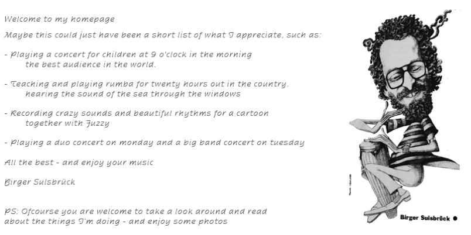

Birger Sulsbrück er dansk percussionist, forfatter og underviser — specialist i latinamerikansk percussion, cubansk musik og salsa. Han underviser på Det Kongelige Danske Musikkonservatorium og var International Percussion Tutor på Royal Northern College of Music (RNCM) i Manchester, 2011-2019.
Han er forfatter til lærebøgerne "Latinamerikansk Percussion - Rytmer og rytmeinstrumenter fra Cuba og Brasilien" og "Congas • Tumbadoras", og har optrådt og undervist i hele Europa, USA, Cuba og Sydafrika. Se mere på INFO-siden.
(Den engelske forside-tekst findes kun som billede — skift til ENGLISH for at se originalen.)